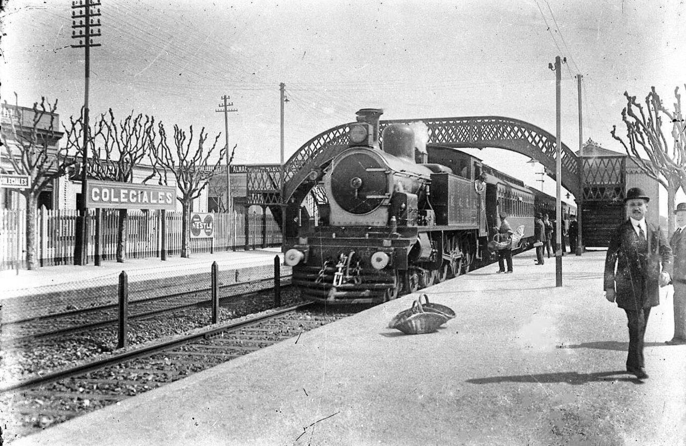

Колехиалес: каникулы школяров, мука, рельсы и стёртый посёлок
Колехиалес, Буэнос-Айрес · 7 мест
Название района переводится как «школяры», и школы тут ни при чём. В 1608 году губернатор Эрнандариас дал ордену иезуитов земли к северо-западу от тогдашнего Буэнос-Айреса. За следующие полтора века хутор разросся примерно до 2700 гектаров и получил имя Ла-Чакарита, от слова кечуа «чакра», огород. Сюда на каникулы вывозили учеников иезуитского колледжа Сан-Игнасио, того самого, что сегодня называется Национальным колледжем Буэнос-Айреса. Так место и прозвали: Чакарита школяров.
Колледж пользовался этими землями до конца XIX века. Один из его выпускников, писатель Мигель Кане, описал летние вылазки на чакру в повести «Ювенилия» (1884); местные краеведы уверены, что ручей из этой книги тёк там, где сейчас улица Элькано. Дороги, по которым ездили школяры и монахи, стали проспектами: Федерико Лакросе — бывший «путь школяров», а Кабильдо — старая Северная дорога.
С днём рождения района вышла история. В 2003 году город назначил ему дату 21 сентября 1863 года — день, когда Кане поступил в колледж. Часть местных историков возражала: в 1863 году здесь никто постоянно не жил, и настоящим рождением стоит считать 1888 год, когда закон разрешил делить Чакариту школяров на участки под продажу. Победила красивая версия.
Город сюда пришёл по рельсам. Британская компания Центральная аргентинская железная дорога, нынешняя линия Митре, провела через бывший хутор пути, а главное — устроила здесь огромные грузовые и сортировочные парки. В 1887 году вместе с соседним Бельграно район вошёл в черту Буэнос-Айреса. В 1920-е вокруг путей вырос промышленный пояс: мельница семьи Минетти, текстильная фабрика Ла Альгодонера, макаронная фабрика, дюжина заводиков по розливу вина, оптовый овощной рынок. Хлопок с севера страны приходил прямо в цеха вагонами.
Рядом с работой селились рабочие. С конца 1940-х на южном сортировочном парке и пустырях вокруг вырос самостроенный посёлок — Вилья-30, «вилья» по-аргентински значит трущобный посёлок. Сюда ехали из бедных провинций, Сантьяго-дель-Эстеро и Формосы, и из Парагвая. По оценке городской жилищной комиссии, в 1966 году здесь жили 7300 человек, а в 1976-м — больше двенадцати тысяч.
24 марта 1976 года военные свергли президента Исабель Перон. Страну к тому времени раздирала партизанская война левых групп Монтонерос и ERP и террор ультраправых эскадронов «Тройное А», а правительство после смерти Хуана Перона в 1974 году слабело на глазах. Хунта назвала свой режим «Процессом национальной реорганизации» и правила до 1983 года, опираясь на государственный террор: тайные тюрьмы, похищения, тысячи исчезнувших людей.
Для Буэнос-Айреса у хунты был свой план. Назначенный ею глава города Освальдо Качиаторе в 1977 году запустил программу искоренения вилл в три этапа: заморозить их рост, сделать жизнь в них невыносимой, снести. Официально целью было «вывести семьи из маргинальности», в городской брошюре 1980 года виллы объясняли «недостаточным усвоением норм городской жизни». Историк Паола Поледоре, изучавшая именно Колехиалес, делает вывод прямее: власть исходила из того, что у жителей вилл просто нет права жить в столице. К 1980 году из вилл города выселили около 180 тысяч человек. Вилья-30 снесли одной из первых, в 1978 году.
Почти одновременно район лишился и заводов. Экономическая программа министра хунты Мартинеса де Осы развернула страну от защиты своей промышленности к открытым границам для импорта. Текстильная фабрика не выдержала дешёвого импорта, мельница остановилась, оптовый рынок закрылся.
С 1990-х начался «Новый Колехиалес»: пустые заводы превратили в лофты, в район потянулись продакшн-студии из соседнего Палермо-Холливуда, а на глухих стенах появились муралы. Сегодня старые одноэтажные дома один за другим сносят под жилые комплексы, а художники продолжают расписывать то, что осталось. Прогулка ниже идёт с севера на юг: от доходного дома 1920-х и станции к площади на месте стёртого посёлка, мельнице и рынку.
Места
1.Пассаж Хенераль ПасДом, который строили под аренду, а получили в собственность — и потом заперли от города.Открыть в Google Maps
Pasaje General Paz
Открыть в Google MapsВ 1925 году инженер-архитектор Педро Винент построил на собственном участке два четырёхэтажных корпуса по сторонам пешеходного прохода — 57 квартир, андалусский двор, балконы-мостики между крыльями. Буэнос-Айрес тогда рос на волне иммиграции, жилья не хватало, а бедные семьи ютились в конвентильо — общих домах, где семья снимала одну комнату, а кухня и уборные во дворе были на всех.
Строить многоквартирный дом «на продажу» Винент не мог бы, даже если бы хотел: по Гражданскому кодексу того времени дом нельзя было разделить между владельцами квартир, у здания мог быть только один хозяин. Поэтому такие дома строили под аренду и называли «коллективными». Пресса сегодня называет пассаж шагом вперёд по сравнению с конвентильо. Жильцы с этим сравнением спорят: «Это никогда не было конвентильо», — говорит восьмидесятилетняя Инес Доро.
Всё изменил закон 13.512 о горизонтальной собственности 1948 года, принятый при первом правительстве Перона. Он впервые разрешил продавать квартиры в одном доме по отдельности. Жильцы пассажа, по их рассказам, получили право выкупить свои квартиры первыми, по оценочной цене, — и арендаторы стали хозяевами. Некоторые семьи живут здесь с 1940-х. Одна жительница въехала сюда двенадцатилетней на следующий день после разрушительного землетрясения в Сан-Хуане в январе 1944 года. В разное время здесь жили музыкант Андрес Каламаро и актриса Хульета Кардинали.
С именем путаница. В городских планах проход значился как пассаж Исабель Санчес Винент, по жене архитектора. По версии газеты La Nación, нынешнее название досталось от улицы Хенераль Пас, на которую выходил вход: когда в 1941 году открыли одноимённый кольцевой проспект, улицу переименовали в Сьюдад-де-ла-Пас, а пассаж остался со старым именем. Другие пишут, что его прямо назвали в честь генерала Хосе Марии Паса.
В 1970-е открытый проход закрыли решётками и часами доступа — почему, источники не объясняют. С тех пор пассаж частный, и внутрь не пускают.
Присмотрись
Полукруглая арка над входом с надписью «Pasaje General Paz». Сквозь решётку видно начало прохода; внутри, по описаниям жильцов, подвесные сады, мостики на втором и третьем этажах, жёлтая майолика на колоннах и шахматный пол. Второй выход — на улице Сапата, 552.
2.Станция Колехиалес и грузовой паркРайон назван в честь школяров, а сделан железной дорогой — и пути до сих пор режут его пополам.Открыть в Google Maps
Estación Colegiales
Открыть в Google MapsПассажирскую станцию британская Центральная аргентинская железная дорога открыла здесь в 1898 году, на бывших землях Чакариты школяров. Но железнодорожным район сделали не платформы, а то, что за ними: грузовой парк у станции занимает около девяти кварталов, а южнее проспекта Лакросе лежал ещё и большой сортировочный парк.
От путей расходились ветки, и по ним можно прочитать экономику района. Одна шла к текстильной фабрике Ла Альгодонера, другая соединяла Центральную аргентинскую дорогу с дорогой Пасифико, третья возила муку на склады напротив мельницы Минетти; ветка обслуживала и оптовый рынок. В 1948 году британские дороги национализировали, и линия стала дорогой Митре.
Грузы ушли, а земля осталась — и стала предметом спора. В 2017 году город изменил зонирование грузового парка, в 2018-м государственное агентство продало часть участков на торгах под застройку, четыре лота купила страховая компания. Соседи требовали отдать всю землю под парк: Колехиалес — один из самых бедных зеленью районов города. Компромисс открылся 27 июля 2024 года: Железнодорожный парк Колехиалес между улицами Вирей-Олагер-и-Фелиу, Мольдес, проспектом Лакросе и путями. Город заодно отменил торги ещё по двум участкам. Остальной парк по-прежнему служит дороге: на нём стоят составы и путевая техника.
Сама станция осталась скромной: в 2024 году через неё прошли больше 760 тысяч пассажиров, но зала ожидания нет.

Присмотрись
Высокие платформы с кассами и пешеходный мост. С моста и из нового парка видно, сколько места до сих пор занимают пути: за оградой стоят составы на грузовом парке.
3.Бар КондеБар считает себя ровесником XX века, а его фирменный коктейль называется «Железнодорожный».Открыть в Google Maps
Bar Conde
Открыть в Google MapsБар на углу Конде и Лакросе называет годом своего открытия 1902-й — так написано в его девизе; документов, подтверждающих дату, не нашлось. Зато точно известно, когда началась нынешняя династия. В 1966 году заведение взял Хосе Луис Кофиньо, астуриец, приехавший в Аргентину в 1962-м. С 2016 года бар ведёт его сын Лукас.
Внутри всё, за что в Буэнос-Айресе любят старые бары: высокие потолки, длинная стойка, деревянные столы, фасад без перестроек. Здесь подают сэндвич с сыровяленой ветчиной, сыром и сливочным маслом и напиток «ферровиарио», то есть «железнодорожный», — чинзано с фернетом. Откуда название, никто объяснить не может, но станция в нескольких кварталах. Девять из десяти посетителей — соседи и пациенты соседней клиники.
Каждое 1 августа бар бесплатно наливает посетителям «канья кон руда» — тростниковую водку, настоянную на руте. По народному поверью, глоток в этот день защищает от зимних болезней; обычай связывают с гуарани северо-востока страны и с Днём Пачамамы, богини земли. «Это обычай моего старика, и я решил его продолжать», — говорит Лукас.
Долго Кофиньо отказывались от статуса «примечательного бара» — городской программы охраны исторических кафе: боялись, что потом ничего нельзя будет менять. В августе 2026 года город всё-таки включил Bar Conde в этот список.
Присмотрись
Стойка и высокие потолки; в меню — «ферровиарио».
4.Плаза МафальдаДетская площадь с героями комикса стоит там, где до 1978 года жили двенадцать тысяч человек.Открыть в Google Maps
Plaza Mafalda
Открыть в Google MapsПосмотри вокруг площади: многоэтажные дома ВВС, корпуса Католического университета, станция городской мусорной компании, спорткомплекс, школа. Для тихого района низких домов это странный набор, и у него одна причина. До 1978 года здесь стоял посёлок Вилья-30, а большие учреждения поставили на его месте.
Посёлок вырос на сортировочном парке и пустырях у мельницы, текстильной фабрики и рынка: люди селились там, куда можно дойти до работы пешком. Он делился на секторы с собственными именами — Митре, Доррего, Матьенсо, Феникс, Прогресо. В 1959 году комиссия жителей выбивала у города воду и свет. Сара, родившаяся здесь в 1962 году, вспоминала, что соседи приезжали из провинций, не имея ничего, и многие уже копили на свой участок в пригороде.
Снос прошёл по плану Качиаторе из вступления. Семьям, у которых был купленный участок, грузовики программы перевозили вещи; остальным предлагали вернуться в свои провинции или страны. Сару в 15 лет вывезли в пригород Сан-Мигель. «Всё было быстро», — рассказывала она историку. 13 декабря 1978 года священник-салезианец написал, что посёлок «полностью искоренён». Здешнюю часовню Девы Каакупе, покровительницы Парагвая, разобрали и на муниципальных грузовиках увезли в пригород Дерки, где, по его словам, осели около десяти тысяч парагвайцев.
На освободившейся земле прорезали новые улицы — Матьенсо, Консепсьон-Аренал, Фрейре, Конде — и назвали кварталы «Новым Колехиалес». Жилого района, который обещали, не получилось: землю раздали крупным учреждениям, и этот пояс до сих пор отделяет Колехиалес от Палермо.
Один угол долго пустовал, и власти письменно обещали здесь зелень. По рассказу местных краеведов, в январе 1994 года государство начало строить на нём дома для переселенцев из Вильи-31, большой виллы у вокзала Ретиро. Соседи сослались на распоряжение «только площадь»: женщины с детьми встали перед техникой, около тысячи человек взялись за руки вокруг участка, прошёл «Марш света» с фонарями. Через несколько дней переселение отменили, а городской совет выделил деньги на сквер.
Площадь открыли в 1995 году, а имя ей выбрали голосованием дети района. Мафальда — девочка из комикса Кино, который выходил в 1964–1973 годах. Она задаёт взрослым неудобные вопросы о мире, в котором они живут. С жизнью самого Кино площадь не связана: его Мафальда «живёт» в Сан-Тельмо, там на улице Чили, 371, висит табличка «Здесь жила Мафальда».
Присмотрись
Дорожки, выложенные «крестиками-ноликами», треугольные секторы, посвящённые персонажам комикса, рисунки героев на скамейках. В 2021 году здесь открыли игровую зону для детей с аутизмом. По сторонам площади — высотки ВВС и корпуса университета на земле бывшего посёлка.
5.Силосы ДоррегоКруглые кирпичные башни мололи муку для города, а потом стали одними из первых лофтов Южной Америки.Открыть в Google Maps
Silos de Dorrego
Открыть в Google MapsСемья Минетти из пьемонтского городка Барже приехала в Аргентину в 1867 году и сделала состояние на муке: мельницы в Росарио, Кордове, Мендосе. 23 апреля 1922 года при президенте Альвеаре открылась их мельница «Буэнос-Айрес» на улице Доррего, в 1927-м к ней добавили второй корпус и ещё одну батарею силосов. Место выбрали из-за рельсов: по словам краеведа Алисии Брагини, мельница выиграла от близости к железнодорожной платформе, а ветка разгружала зерно прямо у завода. Напротив работала макаронная фабрика «Летисия» — по рассказу Infobae, названная в честь первой дочери основателя.
Конец пришёл с двух сторон. Разросшийся посёлок Вилья-30 перекрыл пути, и ветка вышла из употребления. В 1978 году, почти одновременно со сносом посёлка, Минетти демонтировали цех; к 1980 году производство закончилось, и комплекс несколько лет стоял пустым.
Новую жизнь ему дал дизайн. В 1992 году в заброшенных корпусах прошла Casa FOA — ежегодная выставка интерьерного дизайна. С 1993 года бюро Дюжовне–Хирш перестроило мельницу в жильё и офисы, сохранив кирпичные фасады: два круглых корпуса на месте силосов и прямоугольный, бывшую контору. Комплекс называют первым лофт-комплексом Южной Америки. Сегодня здесь бассейн и корты для падела, а лофты в 2024 году стоили от 200 до 900 тысяч долларов. Для краеведов мельница остаётся одним из символов эпохи, когда Аргентина богатела на зерне.
Та же история повторилась в соседнем квартале, уже за границей района, у Ла Альгодонеры. Текстильная фабрика выросла из Первой мировой войны: поставки тканей из Европы оборвались, и их стало выгодно делать на месте. Её здание 1940-х годов работы архитектора Хорхе Бунге было устроено с размахом: до четырёх тысяч работников, бассейн на пятом этаже, теннис и зелёные террасы для рабочих и их семей. После 1976 года рынок заполнили дешёвые импортные ткани и синтетика, в 1980-е компания перешла к владельцам, которые её обескровили, и в начале 1990-х фабрика закрылась. С 1993 года её, как и мельницу, перестроило то же бюро — под лофты и офисы.
Присмотрись
Два круглых кирпичных корпуса и прямоугольный корпус бывшей конторы — внутрь не пускают, но с улицы хорошо видно, что башни когда-то были силосами.
6.Блошиный рынокРынок, куда огородники привозили капусту, теперь торгует вещами из чужих квартир со всего города.Открыть в Google Maps
Mercado de Pulgas
Открыть в Google MapsОгромный галпон на углу Альварес-Томас и Доррего построили как оптовый рынок, в конце 1920-х или в 1930-е — источники расходятся. Огородники с окрестных участков продавали здесь урожай оптом уличным торговцам, а товар подвозили поезда: ветка, обслуживавшая мельницу, доходила и до рынка, по рассказу местного издания — прямо в подвал.
В начале 1980-х оптовая торговля здесь закончилась, и галпон несколько лет стоял брошенным. Дальше версии расходятся. Город рассказывает, что в 1988 году здесь открыли рынок антиквариата по образцу европейских барахолок вроде парижской Сент-Уэн. Местное издание помнит менее парадную историю: глава города Факундо Суарес Ластра поселил сюда уличных торговцев, чтобы убрать их с тротуаров; продаж было мало, большинство ушло, а оставшиеся и сложились в рынок старины.
В декабре 2005 года галпон закрыли из-за износа конструкции, торговцы переехали на соседний участок и вернулись в отремонтированное здание в 2011 году. Городская легислатура объявила рынок местом культурного интереса.
Сегодня здесь около 160 прилавков внутри и ещё несколько снаружи: мебель, посуда, лампы, картины, книги, пластинки. Реставраторы, художники и мастера филете — буэнос-айресской орнаментальной росписи вывесок — работают прямо у прилавков. Так рынок продолжает историю района: склад еды для рабочего Колехиалес стал местом, куда со всего города стекаются вещи из снесённых и проданных квартир. Рынок работает со вторника по воскресенье.
Присмотрись
Сам галпон и прилавки реставраторов, которые работают прямо на месте. Рядом на бывшей парковке строят новую площадь.
Если останется время
7.Театр VorterixКинотеатр 1928 года, где были танцы и проповеди, стал сценой для рок-концертов с трансляцией.Открыть в Google Maps
Teatro Vorterix
Открыть в Google MapsКинотеатр «Аргос» на проспекте Лакросе открылся 25 мая 1928 года вместе с одноимённым кафе. Зал жил всем сразу: кино, театр, танцы, а одно время — молитвенные собрания евангелистов. Кино закрылось в 1980-х; последним названием зала было «Театр Колехиалес».
В 2011 году радиоведущий Марио Перголини ушёл с крупной рок-станции Rock & Pop и придумал Vorterix — радио, интернет-трансляции и живую сцену под одной крышей. Его компания купила старый «Аргос», бюро Bau Arquitectos перестроило зал. Открытие 25 мая 2012 года вышло на улицу: концерт группы Nonpalidece на проспекте собрал около 30 тысяч человек. В ноябре того же года открыли студию имени рок-музыканта Луиса Альберто Спинетты, первыми там играли Divididos. Концерты снимают восемнадцать роботизированных камер и транслируют в сеть.
Сегодня это концертный зал примерно на полторы тысячи мест — рок, метал, инди, поп.
Присмотрись
Объём старого кинотеатра 1928 года под новой вывеской Vorterix.